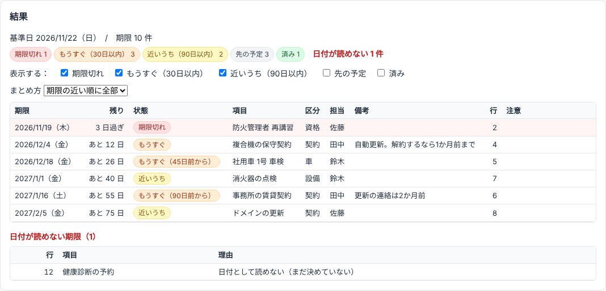
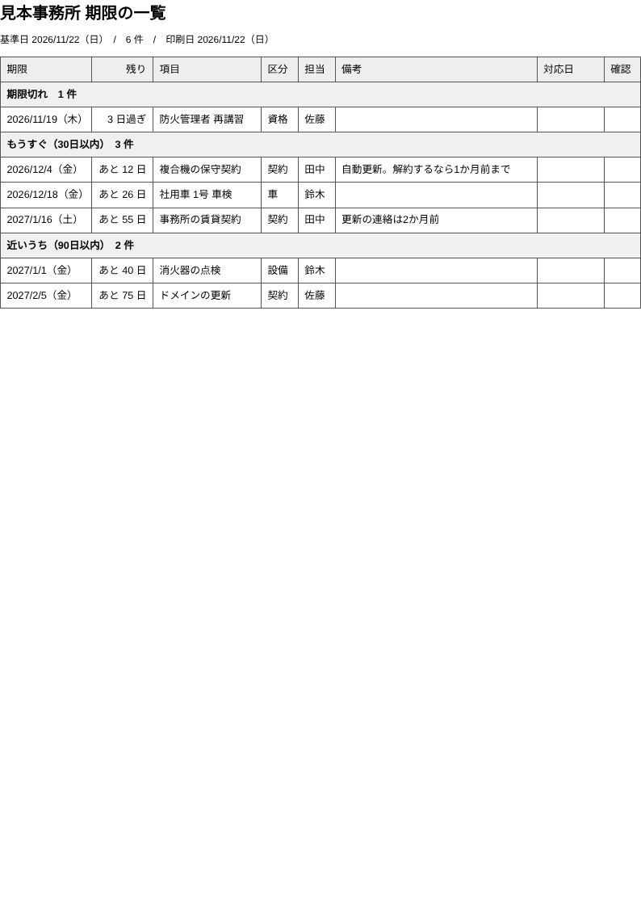

期限の一覧
契約の更新日・資格や免許の有効期限・保険の満期・車検・設備の点検日などをまとめた表を入れると、期限切れと、30日以内・90日以内に来る期限を近い順に抜き出して一覧にするツールです。A4 で印刷して回覧したり、カレンダー（.ics）に書き出して Google カレンダーや Outlook に入れたりできます。ソフトのインストールは不要で、いつものブラウザで動きます。
お試し版はすべての機能を使えて、一覧・印刷・保存・カレンダーは表の先頭15行までです。決済が終わると、そのまま製品版の画面に移動します。ブックマークしておけば何度でも使えます。


見本のデータ（架空の事務所の期限11件、名前も架空）で一覧にし、印刷した例です。
こんなときに
- 契約の更新日・保険の満期・車検・資格の有効期限を Excel の表で管理しているが、毎月見返すのを忘れて期限を過ぎてしまう
- 表に「2027年3月」「令和8年12月1日」「R8.12.1」などの書き方が混ざっていて、並べ替えや式がうまく効かない
- 1台1行の車の表に「車検」「自賠責」「任意保険」の列が並んでいて、どれが一番近いのか分かりにくい
- 期限の近いものだけを担当者ごとに印刷して配りたい、カレンダーにも入れておきたい
できること
- 近い順の一覧：基準日（ふつうは今日）から見て「期限切れ」「もうすぐ（30日以内）」「近いうち（90日以内）」「先の予定」に分け、期限の近い順に並べます。日数は変えられます。「あと 12 日」「3 日過ぎ」と曜日も出します
- 行ごとの知らせ始め：「何日前から」の列があれば、その行はその日数で「もうすぐ」に入ります（例：賃貸の更新は90日前から、車検は45日前から）。「2か月」「1週間」とも書けます
- 期限の列が何本あっても：「車検満了日」「自賠責の期限」のように期限の列を複数選ぶと、列ごとに別の期限として並べます
- 済みを分ける：「済み」「更新済」などの列があれば、済んだものは分けて表示します（空欄・「未」「×」「いいえ」は未として扱います）
- いろいろな日付の書き方：「2026/12/1」「2026-12-01」「2026年12月1日」「令和8年12月1日」「R8.12.1」「H31.4.30」「20261201」、曜日・時刻つき、全角数字、Excel の日付のセル。「2027年3月」のように日がないものは月末として計算します。読めない日付（「2026/2/30」「未定」など）は行番号と一緒に一覧にします
- まとめ方：期限の近い順に全部、区分（契約・資格・車など）ごと、担当者ごと
- 印刷：A4 縦に、期限切れ・もうすぐ・近いうちの順に区切り、「対応日」「確認」の空欄つきで印刷。区分・担当者ごとに1枚ずつにもできます
- 保存：一覧（期限・曜日・残り日数・状態・知らせ始める日…）と、元の表に「読み取った日付・残り日数・状態」の列を足した明細を、Excel ファイル（.xlsx）か CSV で
- カレンダーに入れる：期限の日に終日の予定を作った .ics ファイルを保存します。期限の7日前などの通知と、「知らせ始める日」の予定も付けられます
- CSV（UTF-8・Shift_JIS）と Excel ファイル（.xlsx）を読めます。列は見出し（「期限」「満了日」「更新日」「担当」「区分」など）から自動で選び、画面で選び直せます。Excel の表をコピーして貼り付けても使えます
できないこと（購入前にご確認ください）
- 自動でお知らせ（メール・通知）を送ることはしません。表を入れたときに一覧を作る道具です。定期的に知らせてほしいときは、カレンダーに書き出してカレンダーの通知をお使いください
- 次の期限を決めることはしません（「車検は2年ごと」「資格は5年ごと」などの計算や、法令で決まった期限の判断はしません）。表に入っている日付で一覧にします
- 「12/1」のように年がない日付と、「26/12/1」のような2けたの年は読みません（取り違えを防ぐため）。4けたの年か和暦でお書きください
- カレンダーのアプリによっては、ファイルの中の通知の設定が使われず、アプリの既定の通知になります
- スマートフォンでは操作しにくいため、パソコンでお使いください
Excel だけで期限の近いものを出すなら
B 列に期限の日付があるとき、C2 に
=IF(B2="","",B2-TODAY())
と入れると残りの日数（過ぎていればマイナス）が出ます（セルの表示形式は「数値」にしてください）。状態の文字を出すなら D2 に
=IF(B2="","",IF(B2<TODAY(),"期限切れ",IF(B2-TODAY()<=30,"もうすぐ",IF(B2-TODAY()<=90,"近いうち",""))))
と入れて下までコピーし、C 列で並べ替えるか、フィルターで「期限切れ」「もうすぐ」だけを出します。色を付けたいときは、条件付き書式の「数式を使用して…」で =$B2-TODAY()<=30 のような式を使います。
この方法は、B 列がすべて日付として入力されているときに使えます。このツールが向いているのは、「令和8年12月1日」「2027年3月」など文字で入った日付が混ざっている、期限の列が何本もある、行ごとに知らせ始める日数を変えたい、担当者ごとに印刷したい・カレンダーに入れたい、といったときです。
よくある質問
| データはどこかに送られますか？ | 送られません。読み込み・一覧・印刷・保存はすべてお使いのブラウザの中で行います。表示の設定（日数など）だけをブラウザに保存し、表の中身は保存しません。 |
|---|---|
| どんな列が要りますか？ | 必ず要るのは「項目（何の期限か）」と「期限の日付」の2つです。区分・担当者・備考・何日前から・済みの列は、あれば使います。 |
| 毎月使うときは？ | いつもの管理表を保存して、このツールの製品版の画面（ブックマーク）に入れ直すだけです。基準日を変えれば「来月の1日の時点で」のような見方もできます。 |
| 何件まで使えますか？ | 製品版は行数の制限はありません。2万行の表で、一覧づくりは1秒かからないことを確かめています（パソコンの性能によります）。画面の一覧は1,000件まで表示し、全部は印刷・保存に入ります。 |
安心してお使いいただくために
- 表はお使いのブラウザの中だけで処理し、サーバーには送信しません
- 動作環境：最新版の Chrome・Safari・Edge・Firefox（パソコン）
- 説明どおりに動かない場合は、ご購入から7日以内にご連絡いただければ返金します
営業日で「○営業日後」を数えるときは 営業日の計算、備品の数を数える記入用の表は 棚卸の記入用シート印刷 もあります。